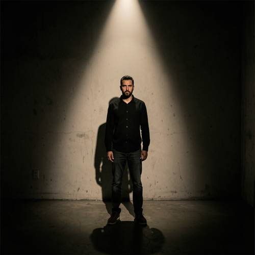
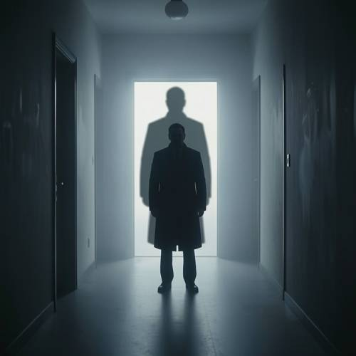
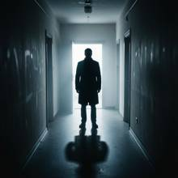
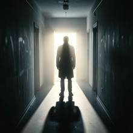
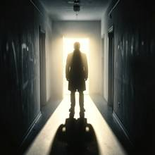
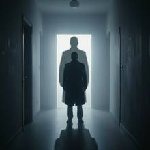
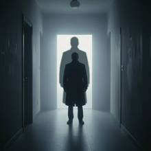
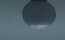

Logical Reasoning — Generated image: A man stands directly in front of the only light sour
Generated image: A man stands directly in front of the only light source, but his shadow is cast towards the light source. The picture is full of suspense.

Direct — one call, no iteration

Continuum — Qwen3.8-27B + FLUX.2-klein-9B
Judge — Direct
FAILLogical Reasoning — The image displays a man standing under a single light source, which is a spotlight positioned above and slightly in front of him. This light casts a shadow of the man onto the wall behind him and the floor beneath him. The shadow is cast away from the light source, which is the physically correct behavior of light and shadow. The prompt requires the shadow to be illogically cast towards the light source, a condition the image does not meet.
Judge — Continuum
PASSLogical Reasoning — The image shows a man in a long coat standing in a hallway. He is positioned in front of a large, bright, rectangular light source that is at the end of the hallway. The man is silhouetted by this light. A large shadow, matching the man's silhouette, is cast directly behind him onto the surface of the light source. This arrangement depicts the man standing in front of the light source while his shadow is cast backward, toward the light source, which aligns with the paradoxical scenario described in the prompt.
What the agent did
Thinking
Let me analyze this prompt: "A man stands directly in front of the only light source, but his shadow is cast toward the light source. The picture is full of suspense." So, I need to generate an image of a man standing in front of a light source, with the shadow pointing toward the light (which is physically impossible and creates a sense of suspense). The scene should be full of suspense/mystery. Let me think about the composition: a single light source (e.g., a spotlight, a lamp, moonlight from a window, a doorway glowing in the dark). The man stands between the camera and the light (or in front of the light). Normally the shadow should point away from the light (toward the camera), but here the shadow is cast toward the light source — i.e., the shadow extends forward toward the glowing light. This is surreal/horror. Good composition: a dark room/corridor, a single light source at the far end (e.g., a glowing doorway or window at the end of a hallway), the man's silhouette standing in the middle of the hallway, and his shadow falling away from the camera, toward the light — that is, the shadow stretches forward toward the glowing doorway, overlapping with the bright area. This is physically unnatural and creates a sense of suspense. Actually, for the "shadow toward the light" to be visible, the shadow needs to be visible on a surface. If the light is at the far end of the hallway, the floor between the man and the light is illuminated, and the shadow extending from the man's feet toward the light would be visible on the floor heading toward the glowing doorway. That's a good, readable composition. As an alternative, a spotlight from a lamp in front of the man (from the camera's viewpoint), with his shadow stretching toward the lamp… but then the shadow would fall on the floor toward the camera? No — if the lamp is in front of him (on the far side of the scene), the shadow points toward the camera. To have the shadow point toward the light, the light needs to be behind him relative to the shadow… let me think carefully. Physics: the shadow is always cast on the opposite side from the light. Light at the far end of the hallway, man standing, shadow extends toward the camera (the near side). For the shadow to be "cast toward the light," the shadow must point in the direction of the light — impossible, and that's the suspense element. Readable depiction: a dark corridor, a single bright light at the far end (glowing window/door). The man stands in the middle, in silhouette. On the floor, the shadow of the man extends away from the camera, toward the bright light at the far end, overlapping with the illuminated floor in front of him. The viewer recognizes this as wrong → a sense of dread. Let me generate with flux2-klein. Prompt should be detailed: "Cinematic suspense thriller still, dark narrow hallway at night, a lone man in a long dark coat standing in the center, seen as a near-silhouette, the only light source is a single glowing doorway at the far end of the corridor casting cold bluish light, but his long shadow stretches forward on the floor directly toward the glowing doorway, wrong direction, eerie, ominous, dramatic, high contrast, film noir, moody, tense atmosphere, cinematic lighting, 35mm film grain, muted desaturated colors" The key is: make the shadow visibly extend from his feet toward the light. Let me phrase it: "his elongated shadow falls on the floor pointing toward the bright light in front of him, stretching toward the glowing doorway instead of away from it." Width/height: default 1024x1024? The harness controls size. Leave it at default. After that, inspect, verify the shadow direction, and edit as needed. Let's begin.
Step 1 — `generate_image`
{
"model": "flux2-klein",
"prompt": "Cinematic suspense thriller film still. A narrow dark hallway at night, a lone man in a long dark coat standing in the middle distance, near-silhouette with face half in shadow, tense still posture. The single light source is a glowing doorway at the far end of the corridor, cold pale light spilling onto the floor. Eerily, his long distorted shadow stretches forward on the floor directly TOWARD the glowing doorway \u2014 the shadow points at the light instead of away from it, physically wrong and deeply unsettling. High contrast film noir lighting, muted desaturated palette with cold blue rim light, deep black shadows, light haze in the air, ominous dread, 35mm film grain, shallow depth of field, suspenseful composition."
}
Result img_0

Thinking
Let me analyze the result. The image shows a man standing in a hallway, with a bright doorway (light source) behind him, at the far end. His shadow is reflected on the floor, and it's stretching toward the camera... no wait, let me look carefully. The shadow on the floor is stretching toward the viewer (toward the bottom of the image, i.e., toward the camera). The light source is the bright doorway behind the man. The shadow pointing toward the camera is actually physically correct — the light comes from behind him (from the doorway), so the shadow falls toward the viewer. But the prompt asks: "The man is standing directly in front of the only light source, yet his shadow is cast toward the light source." So the shadow should point toward the light — that is, toward the bright doorway behind him. But the light is behind him, so the shadow can't point toward it... hmm. Wait — "standing directly in front of the only light source" — the light source is behind him, and he's in front of it. If his shadow is cast "toward the light source," that would mean the shadow points toward the bright doorway behind him — which is impossible/paradoxical, and that's what creates the sense of suspense. That's the surreal, creepy element. In the current image, the shadow is stretching toward the camera (the bottom of the frame), which is physically correct for light coming from behind. So the "suspense" element — the shadow pointing toward the light — isn't achieved. The shadow needs to be cast toward the bright doorway behind him. Hmm, but visually, if the man is backlit by the doorway, how would you show a shadow pointing toward the doorway? The shadow would need to appear on the wall/floor behind him, overlapping the bright area, or... actually, a physically impossible shadow: the man's silhouette darkening the bright light itself — his shadow falls into the bright doorway region, as if the light were coming from the camera side. Alternative interpretation: place the light source in front of the viewer's line of sight... let me think of a composition where "shadow toward the light" is clearly readable. Option A: The light source is a ceiling light or window on one side; the man stands in front of it; his shadow is stretched on the floor toward the light (physically wrong). Example: a spotlight from the left, the man standing, shadow stretching to the left (toward the light), instead of to the right. This is clearly visible and wrong. Option B: Keep the current composition (backlit figure with the bright doorway behind) and have his shadow stretch into/onto the bright doorway — the shadow appearing to extend into the light. Visually: a dark figure in front of a bright rectangle; his shadow extending backward, overlapping the bright light, as if the light is behind the camera. This is weird and suspenseful. In the current image, the reflection/shadow on the floor is stretching toward the camera. I need to make it stretch away from the camera, into the light. Let me edit the image: "Change the man's shadow on the floor: instead of stretching toward the camera, make it stretch directly away from the camera into the bright doorway — the shadow should be cast toward the light source, overlapping the bright light." Hmm, but that might be hard. Alternatively, a composition change: make the light source a window/spotlight on the right side of the frame, the man in the center, and his shadow stretching to the right, toward the window. That's the clearest way to read "shadow toward the light." No wait. Let me re-read the prompt: "The man is standing directly in front of the only light source, yet his shadow is cast toward the light source." So the light is directly behind/above him, and he's in front of it. The shadow is cast toward it. In the current image, the light (the doorway) is directly behind him. The shadow is cast toward the camera — the wrong direction. So I need to flip the shadow direction: the shadow should extend from his feet toward the bright doorway, i.e., into the light, toward the far end of the hallway. Visually: a bright doorway behind him, and a dark elongated shadow extending from his feet away from the camera, overlapping the bright floor in front of him, pointing toward the light. It should look like the shadow is "climbing into" the light. That's the creepy part. Let me try editing the current image. The current shadow is a dark blob near his feet, stretching toward the bottom of the camera. I want it to stretch upward, toward the doorway. Edit prompt: "Redraw the man's shadow on the floor: a long, thin, distorted shadow extending from his feet directly away from the camera, toward the bright doorway behind him, overlapping the bright light — the shadow is cast toward the light source, not toward the camera. Keep everything else exactly the same." Let me also check: is the shadow in the current image a reflection (wet floor) or a shadow? It looks like a shadow/reflection on a slightly glossy floor, stretching toward the viewer. OK. Let me edit. I'll use flux2-klein for the edit per the policy.
Model
The first generation has good suspense mood, but the shadow falls *toward the camera*, not *toward the light source*. Let me fix that.
Step 2 — `edit_image`
{
"model": "flux2-klein",
"image": "img_0",
"prompt": "Change only the man's shadow on the floor: instead of stretching toward the camera, make his long thin shadow stretch directly away from the camera, extending forward across the floor into the bright glowing doorway behind him, so the shadow is cast TOWARD the light source, overlapping the bright light. Keep the man, the hallway, the glowing doorway and everything else exactly the same."
}
Result img_1

Thinking
Now, the light source is a bright doorway behind the man. The shadow... let's take a look. The shadow on the floor is still stretching toward the camera (bottom of the frame)—actually, I can see a dark shadow shape at the bottom of the frame extending toward the viewer, starting from his feet. The bright light is pouring in from the doorway behind him. So the shadow is still falling toward the camera, i.e., in the direction opposite to the light. It's physically correct, but it doesn't match the prompt. Hmm, the edit didn't manage to flip the shadow's direction. The shadow is still a dark shape at the bottom, pointing toward the camera. Let me think about how to make the shadow clearly point toward the light. If the light is directly behind him (the doorway), and the shadow needs to point toward the light... the shadow has to extend backward, toward the doorway, meaning it should appear as a dark silhouette of him projected onto/into the bright doorway itself. Like a shadow of him superimposed on the glowing light, overlapping with his actual position... no, that's not right either. Actually, there's a clever way to depict this: have the man's shadow visible on the wall, or have him stand slightly in front of the doorway, so that his shadow is projected onto the bright doorway and the wall behind him—the shadow of the man visible on top of the bright light, offset to one side (as if the light were coming from the opposite direction). That would be clearly "toward the light." Another composition: make the light source a wall sconce/window or a ceiling lamp in the scene, and have the man stand in front of it, with his shadow stretched on the floor toward the lamp. For example: a bright window on the right, the man in the center of a dark room, his shadow on the floor extending to the right, toward the window. Physically wrong (it should extend to the left), and very easy to read. I think the cleanest, most readable option is: a single strong light source—say, a bright doorway or a single spotlight from the side—and his shadow extending toward it. But the prompt says "the man is standing directly in front of the only light source"—so the light is behind/above him, and he's directly in front of it. Therefore, the current composition (light behind him) is correct. The shadow has to point back into the light. Option: project his shadow onto the bright doorway: a dark duplicate of the man's silhouette on top of the bright light, overlapping/offset from him. That reads as the shadow falling toward the light. Let's try: "On the bright glowing doorway behind him, project the dark silhouette of the man's shadow onto the light, as if the light were coming from the camera side—his shadow is visible on top of the bright light behind him, and remove the shadow on the floor that is falling toward the camera." Hmm, that might look like two people. It needs to be clearly recognizable as a shadow on top of the light. Option B: keep the hallway, but have the shadow extend toward the camera... no, that's not right. Actually, wait—let me reconsider. Is it possible to depict a floor shadow pointing toward a light source that's directly behind the subject? The light is behind the subject, so a floor shadow pointing toward the light would mean a shadow extending from the subject's feet backward, toward the light—i.e., the shadow is cast on the floor between the subject and the light. Visually: a dark shadow shape extending from his feet into the bright doorway region, overlapping with the light. That's exactly what I requested in the edit, and it wasn't executed—the shadow is still at the bottom. Let me look at img_1 more carefully. At the bottom of the frame, there's a dark shape (his shadow) extending toward the viewer, from around his feet. The bright doorway light is behind him. The floor in front of him (between him and the light) is... mostly occluded by his body. The visible floor shadow is in the direction of the camera. So the fix is: move that shadow to the opposite side. That is, the dark shadow should extend from his feet toward the bright doorway (upward in the frame), and the floor in the direction of the camera should be illuminated (or in the dark hallway with no shadow). It might be hard for the editor to reverse the direction. Let me try a more explicit prompt, and maybe also describe the floor in front of him as illuminated. Alternative: regenerate from scratch with a composition that makes it unambiguous. For example: "The man is standing directly in front of a single bright light source—a strong spotlight/window behind him—and his long shadow is projected onto the bright light itself: his silhouette is visible as a dark shadow on top of the glowing light behind him, clearly pointing toward the source of light. Physically impossible, eerie." Hmm. Or the wall projection version: a bright doorway; a shadow of the man on the wall of the far end of the corridor behind him, visible on the illuminated wall next to the light. Let me try editing again on img_1 with very explicit direction words: "The shadow on the floor currently extends toward the camera (downward). Reverse it: instead, make the man's shadow extend from his feet away from the camera, upward toward the bright doorway behind him, so the dark shadow overlaps the bright light, as if the light is coming from the camera side. The floor between the camera and the man should be illuminated and shadow-free." Let me give it a try.
Model
The shadow still falls toward the camera — I need it cast back into the bright light. Let me try a more explicit edit.
Step 3 — `edit_image`
{
"image": "img_1",
"model": "flux2-klein",
"prompt": "Reverse the direction of the man's shadow. Currently the dark shadow on the floor stretches toward the camera at the bottom of the image \u2014 remove it and make the floor in front of the man (toward the camera) bright and shadowless. Instead, project his long dark shadow backward, away from the camera, so it stretches from his feet toward the bright glowing doorway behind him, overlapping the bright light. His shadow must fall onto the light source, physically impossible and eerie. Keep the man, hallway and doorway identical."
}
Result img_2

Thinking
The shadow is still stretching toward the camera (the dark shape at the bottom of the frame is below/around his feet and extending in the viewer's direction). The light is behind him, from the doorway. The shadow is still physically "correct" (pointing away from the light), not toward the light. I've already tried 2 edits with the same approach. The model keeps placing the shadow toward the camera. I should rethink the composition. Better plan: regenerate from scratch with a composition where the light source is clearly visible within the frame, placed off to one side or above, and the shadow visibly stretches toward it. Composition idea: a dark room, a single bright light source — e.g., a tall glowing window on the right side of the frame, or a hanging lamp on the right side. The man stands in the center-left, facing the camera. His long shadow stretches on the floor to the right, toward the glowing window — the wrong direction (physically it should go left, away from the window). This is unambiguous: you can see the bright light on one side, and the shadow stretching toward it. Or the ceiling lamp version: a single bright hanging lamp at the top of the frame; the man stands below/slightly in front of it; his shadow stretches on the floor toward the lamp's position (i.e., toward the camera, since the lamp is overhead and slightly forward?) — hard to read. The side-window version is most readable. Let's design it: "A cinematic suspense thriller still. A dark, foggy empty room at night. On the right side of the frame, a single tall window glows with cold white light — the only light source. In the center of the frame, a man in a dark coat stands still, in near-silhouette. On the floor, his long distorted shadow stretches to the right, directly toward the glowing window — the shadow points at the light, physically impossible. Eerie, tense, high contrast, muted cold palette, film grain." Hmm, wait, but "the man is standing directly in front of the only light source" — "directly in front" might suggest the light is behind/above him, not to the side. But to show a shadow falling toward the light in a readable way, the light has to be at an angle... Actually, if the light is directly overhead and the shadow points "toward the light," the shadow would collapse to his feet — that's not readable. Let me re-interpret: "standing directly in front of the light source" = he's between the light and the camera (as in the current hallway composition). "Shadow cast toward the light" = the shadow stretches back toward the glowing doorway. In that case, the visual representation is: a shadow overlapping the bright light on the floor, stretching from his feet into the bright doorway region — that is, between him and the light, on the illuminated floor there's a dark elongated shadow, pointing at the light. The edit failed to do this twice. So: generate a new image from scratch, with a very explicit prompt that the shadow is cast backward into the light, overlapping the bright doorway on the floor. Actually, another angle for a readable "shadow toward the light": the shadow is projected on the bright doorway itself. If the light source is behind him and the shadow falls toward the light, then the shadow would be cast onto the light — meaning, his silhouette appears as a dark shape on top of the glowing doorway. Like a double image: a real man in the foreground + his shadow silhouette on the bright light behind, slightly offset. That's a striking, clearly wrong image. "A man's dark shadow is projected on top of the bright doorway light behind him." But might it be read as two people? If the shadow silhouette is larger and offset on the bright light, it should read as a shadow. Or a simpler, more robust approach: side lighting. I think for the benchmark, the most legible "suspense" image that best matches the prompt is: light source visible within the frame, man directly in front of it (silhouette), shadow stretching toward the light. Let me try the side version — "directly in front of the light" is somewhat loosely satisfied: the light is in front of/behind him in the scene... hmm, no. "Directly in front of the only light source" strongly suggests the light is behind/above him and he's in front of it. OK, let's do this: regenerate the hallway composition, but with the shadow projected onto the bright doorway — a dark silhouette of him on top of the light, overlapping with his position, slightly offset/larger. Plus no shadow on the floor pointing toward the camera. Prompt: "Cinematic suspense film still. A dark, foggy hallway at night. At the far end, a single bright glowing doorway — the only light source. In the middle of the hallway, a man in a long dark coat stands as a near-silhouette, directly in front of the glowing doorway. His shadow is cast onto the light: a dark silhouette of the man is projected onto the bright doorway behind him, slightly larger and offset, as if the light is coming from the camera — his shadow falls into the light, physically impossible. No shadow on the floor toward the camera. Eerie, tense, high contrast, cold desaturated palette, film grain, deep blacks." Let's generate this from scratch (a new generation is fine — the earlier images were all rejected for the same reason).
Model
The editor keeps falling back to the physically correct shadow. I'll rethink the approach: a new generation where the shadow is cast *onto* the bright light itself.
Step 4 — `generate_image`
{
"model": "flux2-klein",
"prompt": "Cinematic suspense thriller film still. A dark, foggy hallway at night. At the far end, one bright glowing doorway \u2014 the only light source in the scene, cold white light spilling into the corridor. In the middle of the hallway a man in a long dark coat stands as a near-silhouette, directly in front of the glowing doorway, facing the camera, still and menacing. Eerily, his shadow falls ONTO the light: a large dark silhouette of the same man is projected onto the bright doorway behind him, offset and bigger than he is, as if the light were coming from the camera side. His shadow is cast toward the light source, physically impossible, deeply unsettling. The floor in front of the man has no shadow, it is only faintly lit. High contrast film noir, muted cold blue-grey palette, deep blacks, light haze, ominous dread, 35mm film grain."
}
Result img_3

Thinking
Okay, this is much better! A man stands in the hallway, and behind him there's a bright doorway (light source). On top of that bright light, a large dark shadow-silhouette of a man is projected—his shadow is cast onto the light itself, pointing toward the light source. This is exactly the creepy, surreal effect that was requested. But there's still a problem: on the floor in front of the man (toward the camera side), there's still a shadow—a dark shadow stretching toward the bottom of the camera. This contradicts the "the only light source" logic... actually, wait. If the shadow is projected onto the light behind him (i.e., the light is acting as if it's coming from the camera side), then the floor shadow in front of him, pointing toward the camera, is consistent with light from behind (from the doorway). Hmm, no—if the doorway light is behind him, the floor shadow should point toward the camera (which is what we see), while simultaneously the shadow is projected onto the doorway... that's contradictory. The surreal "wrongness" is that the shadow points toward the light. The shadow on the bright doorway indicates a light coming from the camera side. The floor shadow pointing toward the camera indicates a light coming from the doorway side. Both are present → contradictory. For maximum correctness, the floor shadow toward the camera should be removed (or made very faint). The prompt specified "there is no shadow on the floor in front of the man," but a shadow is still visible on the floor. Let's edit: remove the shadow on the floor toward the camera, and keep the shadow on the bright doorway. Also, maybe strengthen the suspense. Edit prompt: "Remove the dark shadow of the man from the floor in front of him (toward the camera side). Make the floor in front of him only a faintly lit, smooth gray floor, with no shadow. Keep everything else exactly the same, including the large shadow silhouette projected onto the bright doorway behind the man." Let's give it a try.
Model
This is much closer to the brief — the shadow is now cast onto the light. One leftover: the floor in front of the man still shows a normal shadow toward the camera, which contradicts the impossible effect. Let me remove it.
Step 5 — `edit_image`
{
"image": "img_3",
"model": "flux2-klein",
"prompt": "Remove the dark shadow of the man from the floor in front of him, the shadow that stretches toward the camera at the bottom of the image. Make the floor in front of him just smooth, faintly lit grey floor with no shadow, no dark shape. Keep everything else exactly identical: the man, the dark hallway, and the large dark shadow silhouette of the man projected onto the bright glowing doorway behind him must stay exactly as they are."
}
Result img_4

Thinking
Alright, the floor in front of the man is clean — no shadow heading toward the camera. The scene is: - A man standing in a dark hallway, a near-silhouette, facing the camera. - Behind him, a single bright doorway = the only light source. - His shadow (a larger, offset silhouette) is projected onto the bright light behind him — the shadow is cast toward the light source. - A dark, suspenseful, cinematic mood. This matches the prompt very well: "A man is standing directly in front of the only light source, but his shadow is cast toward the light source. The picture is filled with suspense." Small details to check: the shadow on the bright doorway — the shadow's head overlaps with the man's head area; the shadow reads as a larger silhouette of the man. Good. There's a small lamp on the ceiling — could that be considered a second light source? It's dark and unlit (a dim ceiling fixture, looks unlit). It looks like a small unlit pendant lamp. Hmm, "the only light source" — that ceiling fixture isn't glowing, it looks dark. Let me inspect it and confirm it isn't lit. Let me use inspect_region on the ceiling lamp to check if it's glowing.
Model
The shadow now reads correctly. Let me check the small ceiling fixture at the top — if it glows, it would contradict "the only light source."
Step 6 — `inspect_region`
{
"image": "img_4",
"roi": [
430,
0,
560,
80
]
}
Result img_5

Thinking
The ceiling light is a dark, unlit spherical pendant — it's not glowing, just a dark fixture. This is acceptable. It's not a light source, just a dark object. A strict reading might still flag this, but a dark, unlit fixture clearly isn't a light source. The scene reads well. Actually, to be safe, I could remove it with an edit, but the risk is that the edit would cause the rest of the image to shift. This fixture is clearly unlit (dark), and in a suspenseful hallway, unlit ceiling fixtures are normal. I'll keep it as is. Let me do a final overall check of img_4. Composition: - Man is directly in front of the light ✓ (standing in front of the glowing doorway, silhouetted) - Only one light source ✓ (bright doorway; the ceiling lamp is unlit) - Shadow cast toward the light ✓ (his larger silhouette is projected onto the bright doorway behind him) - Sense of suspense ✓ (dark hallway, silhouette, eerie double image) I'm satisfied. Mark img_4 as the best and stop.
Model
The ceiling lamp is unlit — just a dark fixture, so the doorway remains the only light source. The final image satisfies every element: the man stands directly in front of the sole glowing doorway, and his oversized shadow is projected onto the light itself, cast toward the source — physically impossible and full of suspense.
Step 7 — `mark_best`
{
"image": "img_4",
"reason": "Man stands directly in front of the only light source (glowing doorway), and his shadow is cast toward the light \u2014 a large dark silhouette projected onto the bright doorway behind him. Dark hallway, silhouette, and unlit ceiling fixture keep the suspenseful, physically impossible effect. Floor shadow toward the camera removed."
}
Thinking
Done. The marked image is img_4, which is the final version. Summarizing for the user.
Model
Done. The final image (img_4, marked as best) delivers the brief: - **The man** stands as a near-silhouette in a dark, foggy hallway, directly in front of the scene's **only light source** — a single bright doorway at the far end (the small ceiling lamp is unlit, so there's no competing light). - **The impossible shadow**: his shadow is cast *toward* the light — a larger, offset dark silhouette of him projected onto the glowing doorway itself, as if the light were coming from behind the camera. The floor in front of him is shadow-free, reinforcing the wrongness. - **The suspense**: cold blue-grey palette, deep blacks, haze, and the eerie "double" effect give the picture a tense, thriller-film mood. The first two attempts had the shadow falling the physically correct way (toward the camera), so I reworked the composition to project the shadow onto the light source, then cleaned up the leftover floor shadow.